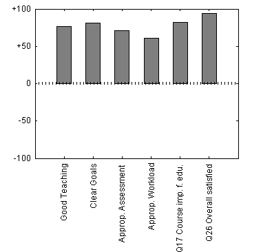
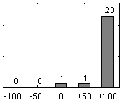
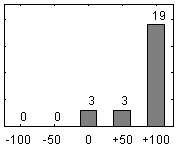

Report Course Evaluation, XXX000
Basic facts
| Course name | COURSE XXX |
| Course code | XXX000 Course syllabus |
| ECTS credits | 7.5 |
| Year | 197071 |
| Study period the course was finished | VT_LP1 |
| Programme | all (XX) |
| Registrated students | 46 |
| Number and share of passed students | 39 / 85 % |
| Number answers and response rate | 25 / 54 % |
| Number answers from males | 13 |
| Number answers from females | 9 |
|
Study hours according the curricula
| Lectures | 42 h |
| Group work | 0 h |
| Laboratories | 42 h |
| Time with supervisor | 0 h |
| Self study time | 120 h |
|
|
Summary of questionnaires
The CEQ-score span between -100 och +100, there -100 means that "I fully disagree to the statement" and +100 "I fully agree to the statement".
Presence at teaching
| Part of teaching | Number | Share |
| 0-30 % | 2 | 8 % |
| 30-70 % | 1 | 4 % |
| 70-100 % | 22 | 88 % |
Scales and questions
| Scale | Score | StdDev |
| Good Teaching | +76 | 27 |
| Clear Goals and Standards | +81 | 26 |
| Appropriate Assessment | +71 | 33 |
| Appropriate Workload | +61 | 38 |
| Special questions | | |
| The course seems important for my education | +82 | 35 |
| Overall, I am satisfied with this course | +94 | 22 |
|

|
Distribution of the answers from question 26:
"Overall, I am satisfied with this course"

| | Number | Share |
|
| Dissatisfied (<0) | 0 | 0 % |
| Neutral (0) | 1 | 4 % |
| Satisfied (>0) | 24 | 96 % |
| No answer | 0 | 0 % |
|
| Mean of CEQ-score | +94 |
| Standard deviation (StdDev) | 22 |
| Males | +92 |
| Females | +100 |
|
|
|
Distribution of the answers from question 17:
"The course seems important for my education"

|
| Mean of CEQ-score | +82 |
| Standard deviation (StdDev) | 35 |
|
|
Comments
Comments by the students' representatives
Detta är en mycket uppskattad kurs. Trulä Trulsson är en omtyckt föreläsare som motiverar studenterna att göra sitt bästa. Dock efterfrågas fler övningsledare, framförallt i samband med inlämningarna.
Comments by the course leader
Comments have not been submitted before the deadline
Comments by the programme director
XXX000 är en kurs som fungerat mycket bra och har gjort det under flera år.
Det har inte framkommit några kommentarer som föranleder några större förändringar i kursen. Däremot är det redan beslutat att den kommer att utökas med en XXXX-del till nästa gång.
How the questionnaires were filled in
By web forms.